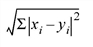
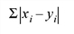
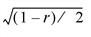
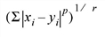

Open topic with navigation
DISTANCE_MEASURE
Syntax
|
Return Value
|
Arguments
|
Keywords
|
Example
|
Version History
|
See Also
The
DISTANCE_MEASURE function computes the pairwise distance between a set of items or observations. The DISTANCE_MEASURE function is designed to be used with the CLUSTER_TREE function.
This routine is written in the IDL language. Its source code can be found in the file
distance_measure.pro
in the
lib
subdirectory of the IDL distribution.
Syntax
Result
= DISTANCE_MEASURE(
Array
[, /
DOUBLE
] [, /
MATRIX
] [,
MEASURE
=
value
] [,
POWER_MEASURE
=
value
] )
Return Value
The
Result
is a vector of
m
*(
m
-1)/2 elements containing the distance matrix in compact form. Given a distance between two items,
D
i
,
j
, the distances within Result are returned in the order: [
D
0, 1
,
D
0, 2
, ...,
D
0,
m
-1
,
D
1, 2
, ...,
D
m
-2,
m-1
].
If MATRIX is set, then the
Result
is an
m
-by-
m
symmetric array containing the full distance matrix, with zeroes down the diagonal.
Arguments
Array
An
n
-by-
m
array representing the coordinates (in an
n
-dimensional space) of
m
items. For example, a set of
m
points in a two-dimensional Cartesian space would be passed in as a 2-by-
m
array.
Keywords
DOUBLE
Set this keyword to perform computations using double-precision arithmetic and to return a double-precision result. Set DOUBLE=0 to use single-precision for computations and to return a single-precision result. The default is /DOUBLE if
Array
is double precision, otherwise the default is DOUBLE=0.
MATRIX
Set this keyword to return the distance matrix as an
m
-by-
m
symmetric array. If this keyword is not set then the distance matrix is returned in compact vector form.
MEASURE
Set this keyword to an integer giving the distance measure (the metric) to use. Possible values are:
MEASURE Values
|
Value
|
Distance
|
|
0
|
(Default): Euclidean distance. The Euclidean distance is defined as:

|
|
1
|
CityBlock (Manhattan) distance. The CityBlock distance is defined as:

|
|
2
|
Chebyshev distance. The Chebyshev distance is defined as:

|
|
3
|
Correlative distance. The correlative distance, where
r
is the correlation coefficient between two items, is defined as:

|
|
4
|
Percent disagreement. This distance is useful for categorical data and is defined as:
(Number of
x
i
≠
y
i
)/
n
|
Note:
This keyword is ignored if POWER_MEASURE is set.
POWER_MEASURE
Set this keyword to a scalar or a two-element vector giving the parameters
p
and
r
to be used in the power distance, defined as:
If POWER_MEASURE is a scalar then the same value is used for both
p
and
r
(this is also known as the Minkowski distance).

Note:
POWER_MEASURE=1 is the same as the CityBlock distance, while POWER_MEASURE=2 is the same as Euclidean distance.
Example
; Given a set of points in two-dimensional space.
DATA = [ $
[1, 1], $
[1, 3], $
[2, 2.2], $
[4, 1.75], $
[4, 4], $
[5, 1], $
[5.5, 3]]
; Compute the Euclidean distance between each point.
DISTANCE = DISTANCE_MEASURE(data)
i1 = [0,0,0,0,0,0, 1,1,1,1,1, 2,2,2,2, 3,3,3, 4,4, 5]
i2 = [1,2,3,4,5,6, 2,3,4,5,6, 3,4,5,6, 4,5,6, 5,6, 6]
PRINT, 'Item# Item# Distance'
PRINT, TRANSPOSE([[i1],[i2],[distance]]), $
FORMAT = '(I3, I7, F10.2)'
PLOT, data[0,*], data[1,*], PSYM = 6, SYMSIZE = 2, $
XRANGE = [0,6], YRANGE = [0,5], $
TITLE='Distance between each point'
FOR i = 0,N_ELEMENTS(distance)-1 DO $
PLOTS, data[*, [i1[i], i2[i]]], linestyle = 1
; Midpoint of each pair.
AVG = 0.5*(data[*, i1] + data[*, i2])
XYOUTS, avg[0,*], avg[1,*], ALIGN = 0.5, $
STRTRIM(STRING(distance, format = '(F7.2)'),2)
When this code is run, IDL prints:
Item# Item# Distance
0 1 2.00
0 2 1.56
0 3 3.09
0 4 4.24
0 5 4.00
0 6 4.92
1 2 1.28
1 3 3.25
1 4 3.16
1 5 4.47
1 6 4.50
2 3 2.05
2 4 2.69
2 5 3.23
2 6 3.59
3 4 2.25
3 5 1.25
3 6 1.95
4 5 3.16
4 6 1.80
5 6 2.06
Version History
See Also
CLUSTER_TREE
,
DENDROGRAM